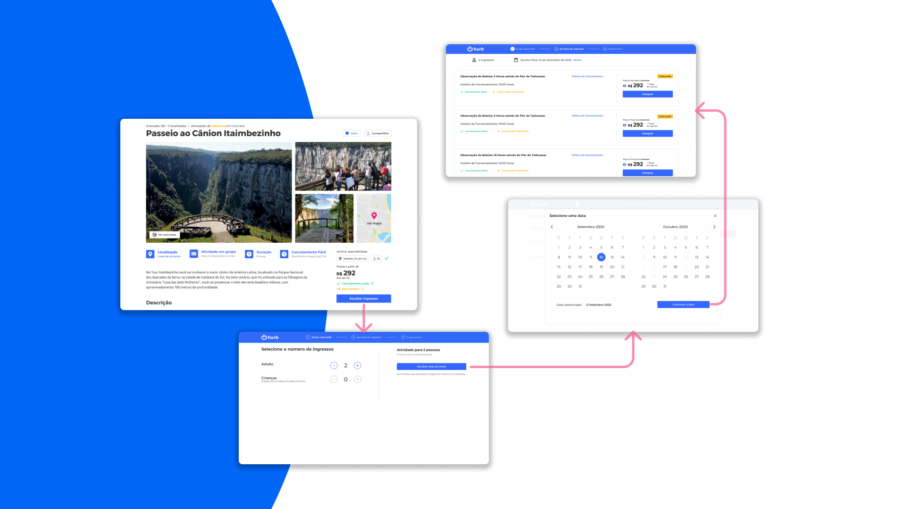
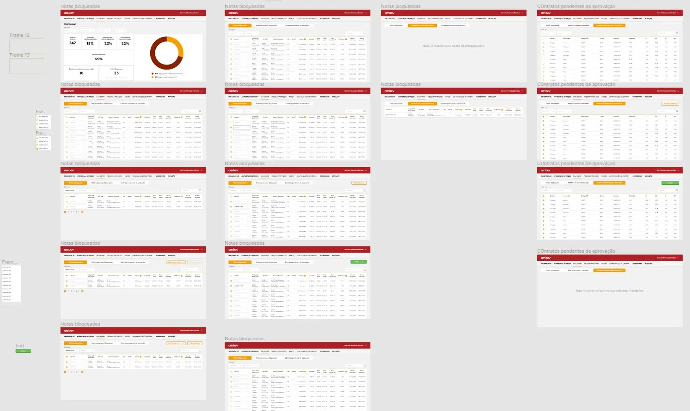
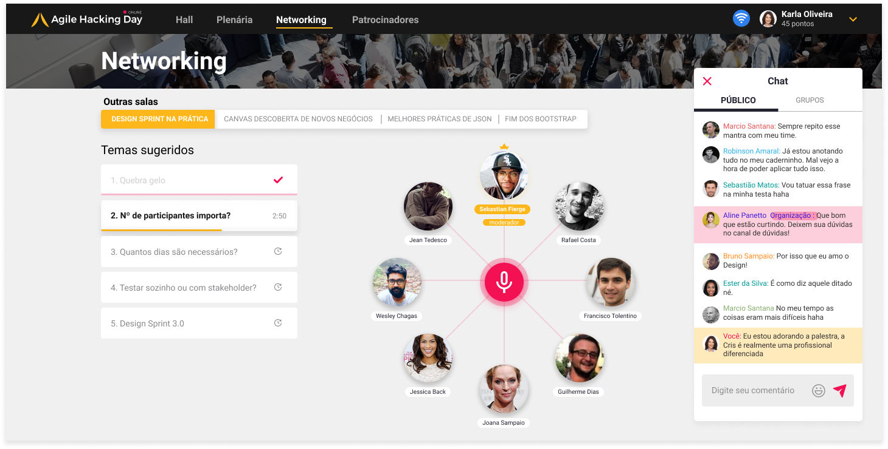

Projeto Hurb
Projeto realizado para o site de compra de atividades para o Hurb, uma das maiores agencias de viagem online do Brasil. Este projeto apresento um pouco sobre meu processo de trabalho e como solucionamos o problema de abandono de carrinho e uma melhoria de conversão de quase 65%.
Conferir projeto

Projeto AmBev
Este case mostra como adaptamos métodos de teste de usabilidade ao ambiente remoto durante a pandemia, para melhorar um sistema interno da AmBev voltado à simulação e compra de insumos. O processo incluiu uma Design Sprint, e um Focus Group remoto, onde clientes testaram o e deram feedback em tempo real.
Conferir projeto

Projeto Volkin
Este case mostra como adaptamos métodos de teste de usabilidade ao ambiente remoto durante a pandemia, para melhorar um sistema interno da AmBev voltado à simulação e compra de insumos. O processo incluiu uma Design Sprint, e um Focus Group remoto, onde clientes testaram o e deram feedback em tempo real.
Conferir projeto